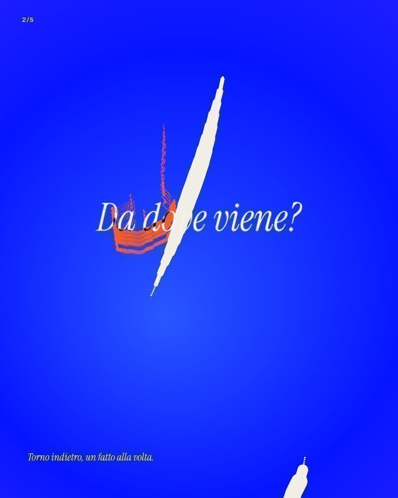
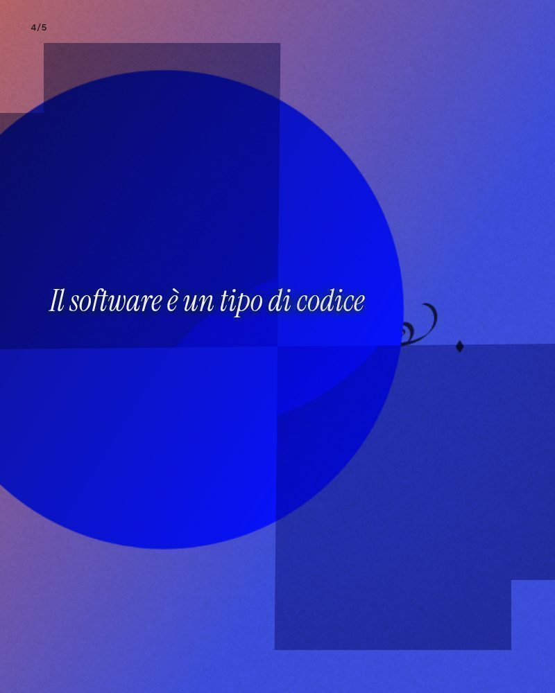

Il software è un tipo di codice. Quanto, forse quello che vale per il codice vale un po' anche per il software

1/5 · Il software è un tipo di codice. Quanto, forse quello che vale per il codice vale un po' anche per il software: lo spazio: è un'ipotesi, non un fatto.

2/5 · Da dove viene?
Torno indietro, un fatto alla volta.

3/5 · Il codice da lo spazio alla cifra

4/5 · Il software è un tipo di codice

5/5 · Il software è un tipo di codice. Quanto
Il software è un tipo di codice. Quanto, forse quello che vale per il codice vale un po' anche per il software: lo spazio: è un'ipotesi, non un fatto.
chi muove lo spazio?